Lansarea proiectului de echipă
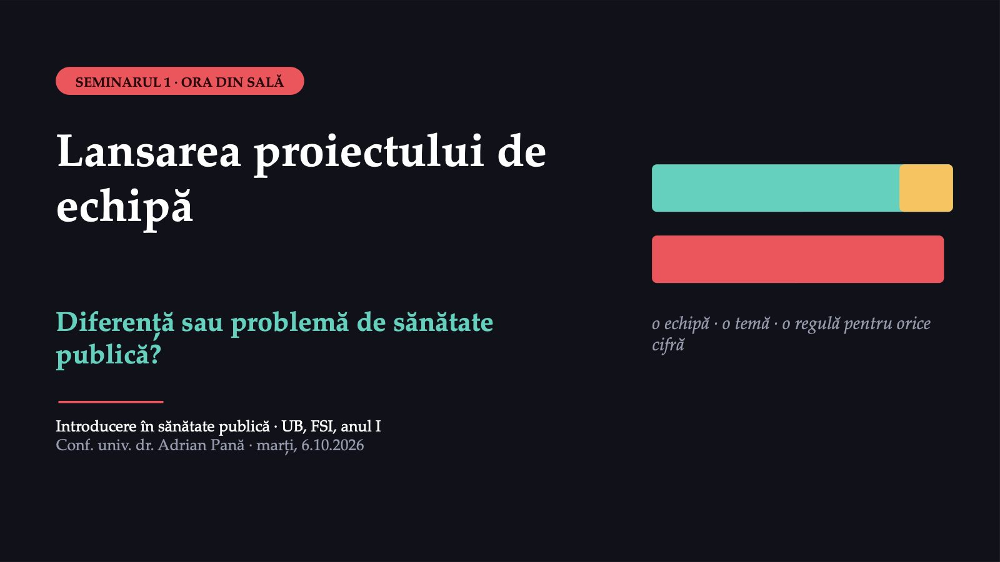
1 / 20Bine ați venit la primul seminar. Azi faceți trei lucruri: formați o echipă, alegeți o temă și învățați o regulă pentru orice cifră pe care o veți scrie în proiect. Proiectul de echipă este 35% din nota finală. Începe azi și se termină în ultimul seminar.
Ce faceți azi și ce predați la sfârșit
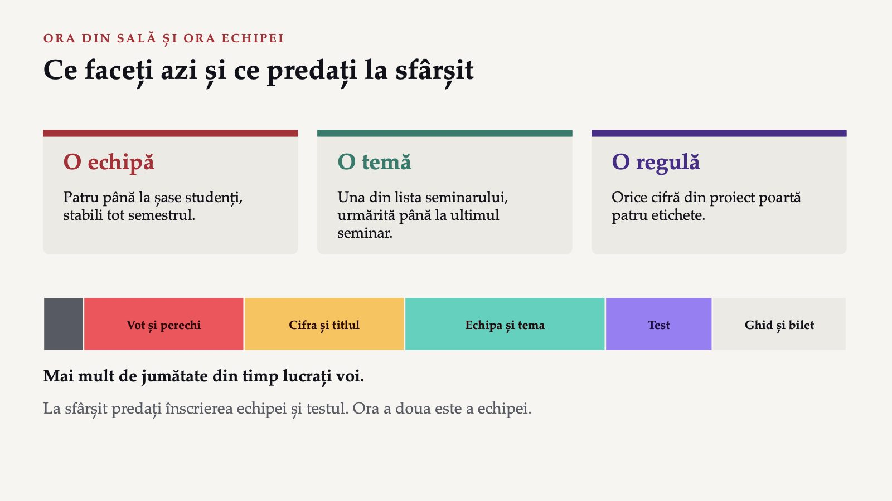
2 / 20Seminarul are două ore: o oră în sală, cu grupele 101 și 102 împreună, și o oră de lucru a echipei, pe care o puteți face acasă. Seminarul urmează imediat după curs și se ține o dată la două săptămâni. În sală lucrați mai mult voi decât eu: votați, discutați cu colegul de bancă, formați echipa și completați un test. La sfârșit predați două lucruri: înscrierea echipei și testul.
Doi copii născuți în același an
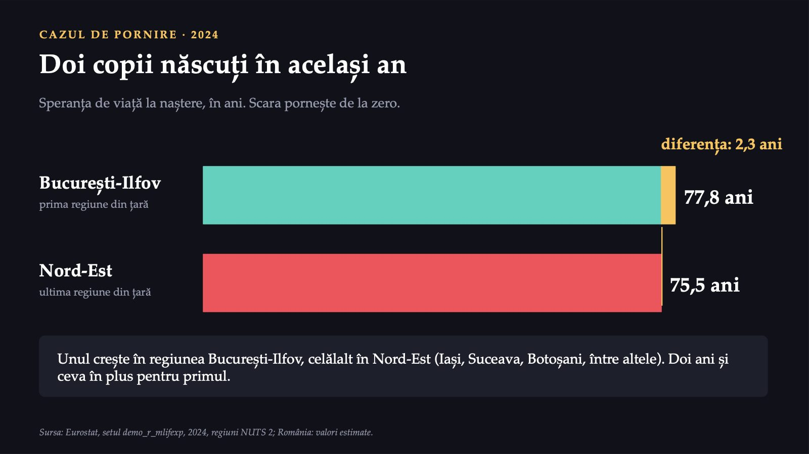
3 / 20Imaginați-vă doi copii născuți în același an: unul crește în regiunea București-Ilfov, celălalt în regiunea Nord-Est, care cuprinde, între altele, județele Iași, Suceava și Botoșani. În 2024, speranța de viață la naștere era de 77,8 ani în regiunea București-Ilfov și de 75,5 ani în regiunea Nord-Est, prima și ultima regiune din țară. Diferența este de 2,3 ani.
Este doar o diferență sau o problemă de sănătate publică?
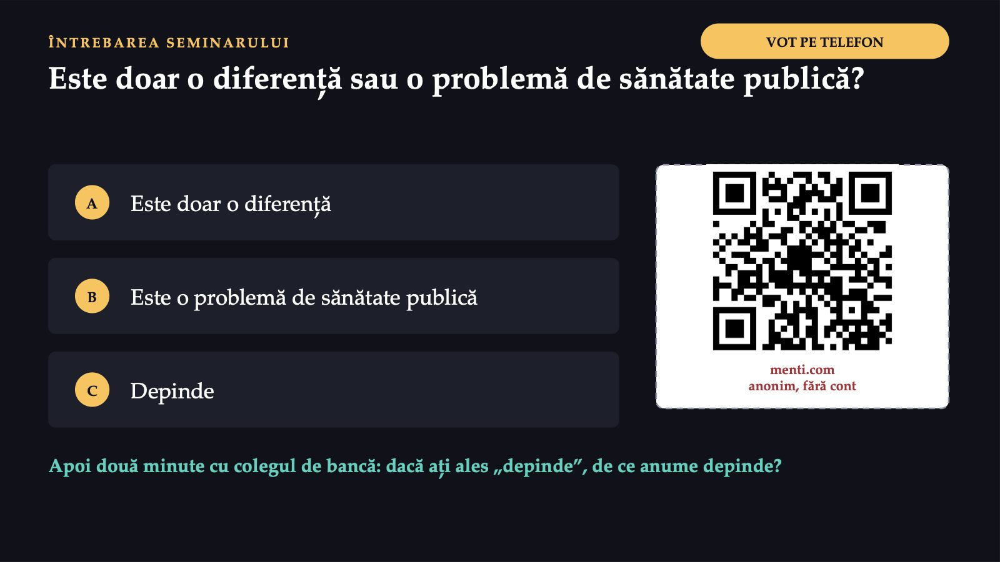
4 / 20Întrebarea de azi: este doar o diferență sau este o problemă de sănătate publică? Alegeți o singură variantă, prin codul QR de pe ecran. Apoi discutați două minute cu colegul de bancă: dacă ați ales „depinde”, de ce anume depinde?
Când o diferență devine inechitate în sănătate
![DEPINDE · TREI CONDIȚII Când o diferență devine inechitate în sănătate 1 Este sistematică Urmează un tipar constant între grupuri, nu o întâmplare. 2 Vine din condițiile de viață Deci se poate schimba prin acțiune organizată. 3 Este nedreaptă Produsă și menținută de aranjamente sociale nedrepte. Inechitate în sănătate O diferență care nu ține de noroc sau de biologie și pe care societatea ar putea-o reduce. Reducerea ei privește sănătatea publică. Sursa: Whitehead M, Dahlgren G. Levelling up (part 1). Biroul Regional OMS pentru Europa, 2006, partea A, p. 2–3.](diapozitive/LP01/005.jpg) 5 / 20
5 / 20Răspunsul cel mai exact este „depinde”. O diferență între două cifre, dintr-un singur an, poate fi o întâmplare. Ea devine o inechitate în sănătate, adică o diferență de care sănătatea publică trebuie să se ocupe, atunci când este sistematică, adică nu este repartizată la întâmplare, ci urmează un tipar constant între grupuri; vine din condițiile în care trăiesc oamenii, deci se poate schimba; și este nedreaptă. Inechitatea în sănătate este o diferență care nu ține de noroc sau de biologie și pe care societatea ar putea-o reduce; reducerea ei privește sănătatea publică.
Diferența nu este accidentul unui an
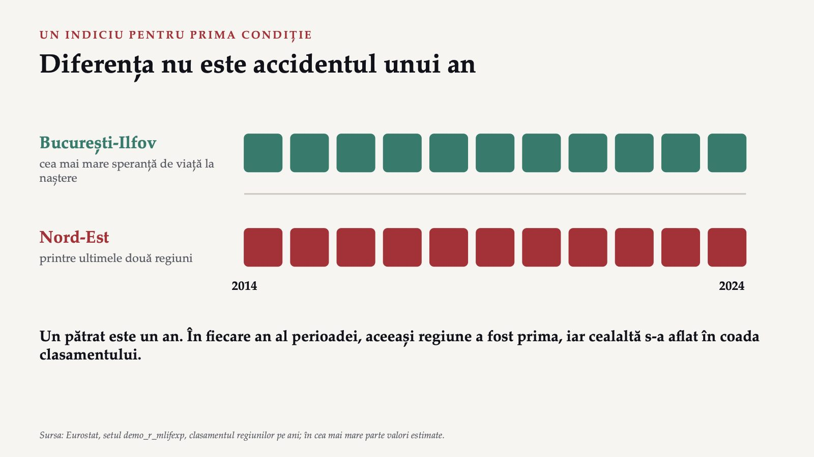
6 / 20Un indiciu pentru prima condiție se poate citi direct în date: tiparul dintre regiuni nu se schimbă de la un an la altul. În fiecare an din perioada 2014–2024, regiunea București-Ilfov a avut cea mai mare speranță de viață la naștere, iar regiunea Nord-Est s-a aflat printre ultimele două regiuni (date Eurostat, în cea mai mare parte valori estimate). Diferența nu este, așadar, accidentul unui an.
Ele cer o întrebare despre cauze
![CELELALTE DOUĂ CONDIȚII Ele cer o întrebare despre cauze venitul locurile de muncă drumul până la un spital obiceiurile alimentare fumatul Dacă diferența vine din astfel de condiții, ea se poate reduce prin acțiune organizată. Definiția clasică a lui Winslow, din 1920 Sănătatea publică previne boala și prelungește viața prin eforturile organizate ale comunității. La aceste întrebări veți răspunde, pentru tema voastră, în seminariile următoare. Sursa: Winslow CEA. The untilled fields of public health. Science 1920;51(1306):23–33, p. 30.](diapozitive/LP01/007.jpg) 7 / 20
7 / 20Celelalte două condiții nu se citesc dintr-un tabel; ele cer o întrebare despre cauze. Diferă venitul, locurile de muncă, drumul până la un spital, obiceiurile alimentare, fumatul? Dacă diferența vine din astfel de condiții, ea se poate reduce prin acțiune organizată. Asta spune definiția clasică a lui Winslow, din 1920: sănătatea publică previne boala și prelungește viața prin eforturile organizate ale comunității. La această întrebare veți răspunde, pentru tema voastră, în seminariile următoare.
75,5
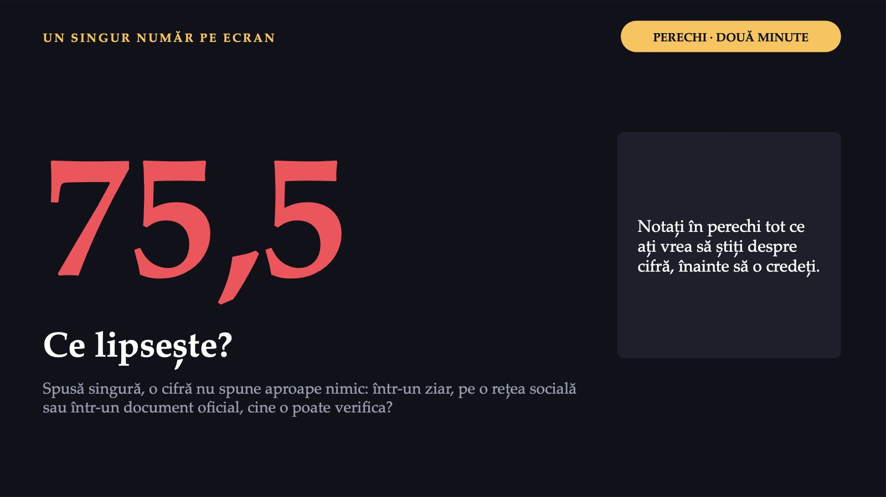
8 / 20Spusă singură, cifra 75,5 nu spune aproape nimic. Dacă o citiți într-un ziar, pe o rețea socială sau într-un document oficial, cine o poate verifica? Ce ați vrea să știți despre ea, înainte să o credeți?
Cifra cu patru etichete
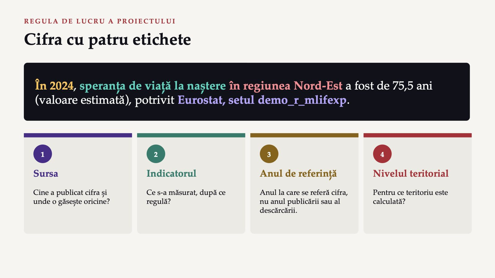
9 / 20Ca să poată fi verificată de oricine, o cifră are nevoie de patru etichete: sursa, indicatorul, anul de referință și nivelul teritorial. Scrisă complet, cifra arată așa: în 2024, speranța de viață la naștere în regiunea Nord-Est a fost de 75,5 ani (valoare estimată), potrivit Eurostat, setul demo_r_mlifexp. Anul de referință este anul la care se referă cifra, nu anul în care a fost publicată sau descărcată.
Indicatorul și nivelul teritorial
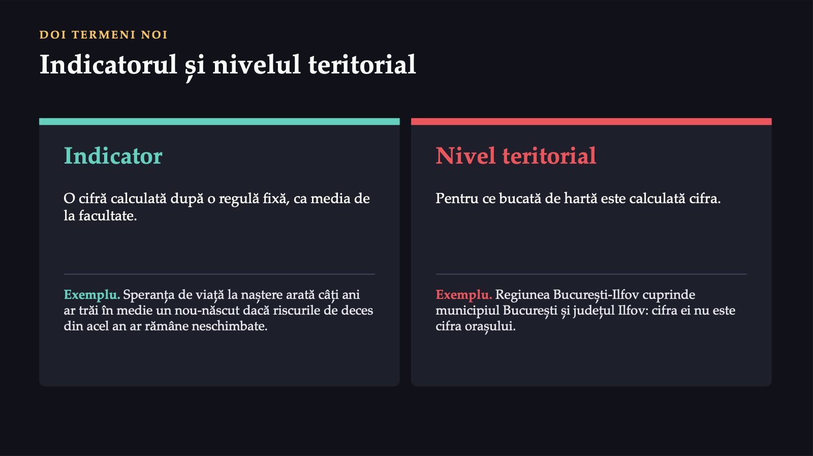
10 / 20Doi termeni noi. Indicatorul este o cifră calculată după o regulă fixă, ca media de la facultate: toți o calculează la fel. Speranța de viață la naștere arată câți ani ar trăi în medie un nou-născut dacă riscurile de deces din acel an ar rămâne neschimbate. Nivelul teritorial este bucata de hartă pentru care este calculată cifra. Regiunea București-Ilfov cuprinde municipiul București și județul Ilfov, deci cifra ei nu este cifra orașului.
Bucureștenii trăiesc cel mai mult din țară
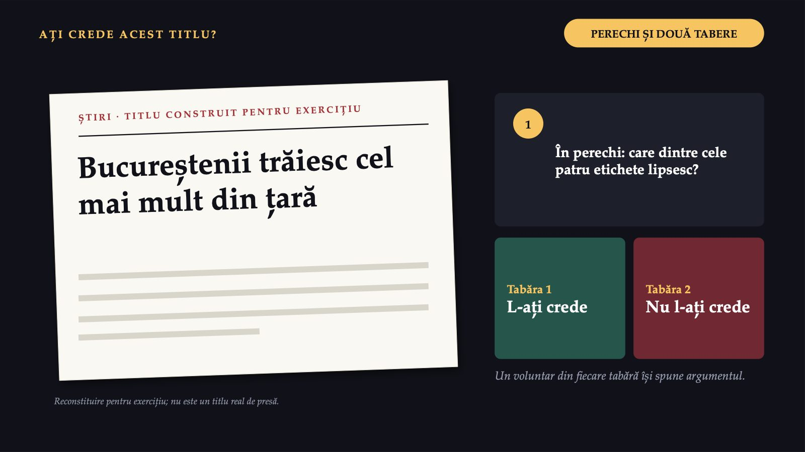
11 / 20Pe ecran este un titlu construit pentru exercițiu: „Bucureștenii trăiesc cel mai mult din țară”. Ați crede acest titlu? În perechi, căutați care dintre cele patru etichete lipsesc. Apoi sala se împarte în două tabere: cei care l-ar crede și cei care nu l-ar crede, iar câte un voluntar din fiecare tabără își spune argumentul.
Un titlu fără etichete nu poate fi verificat
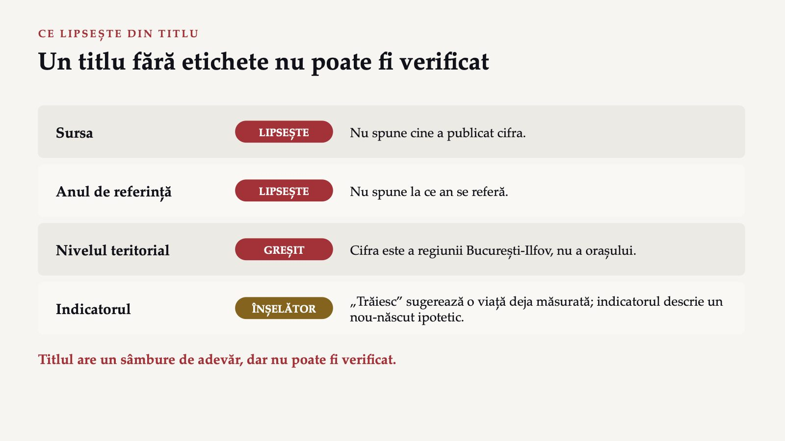
12 / 20Titlul are un sâmbure de adevăr, pentru că regiunea București-Ilfov are cea mai mare speranță de viață la naștere din țară. Două etichete lipsesc: sursa și anul. A treia, nivelul teritorial, este greșită, fiindcă cifra este a regiunii, nu a orașului. Cea de-a patra, indicatorul, este deformată de verbul „trăiesc”, care sugerează o durată a vieții deja măsurată, iar indicatorul descrie un nou-născut ipotetic, expus riscurilor de deces din acel an. Un titlu căruia îi lipsesc etichetele nu este neapărat fals, dar nu poate fi verificat.
Zece teme, cel mult două echipe pe temă
![ECHIPA ȘI TEMA Zece teme, cel mult două echipe pe temă Rujeola revine când vaccinarea scade Obezitatea la adolescenți alimentație și mișcare în anii de școală Fumatul la tineri țigările electronice, reglementarea Gripa sezonieră epidemiile de iarnă, presiunea pe spitale Accidentele rutiere viteza, alcoolul la volan Sănătatea mintală la tineri anxietatea, depresia, accesul la ajutor Consumul de alcool cât, cine, cu ce urmări pentru sănătate Poluarea aerului în orașe aerul marilor orașe și efectele lui Sedentarismul lipsa mișcării la toate vârstele Vaccinarea HPV prevenirea cancerului de col uterin](diapozitive/LP01/013.jpg) 13 / 20
13 / 20Proiectul se face în echipe stabile, formate azi. Fiecare echipă alege o singură problemă de sănătate publică din România, din această listă, și o urmărește tot semestrul. O temă poate fi aleasă de cel mult două echipe, deci este bine să aveți o a doua variantă.
Echipa și înscrierea în formular
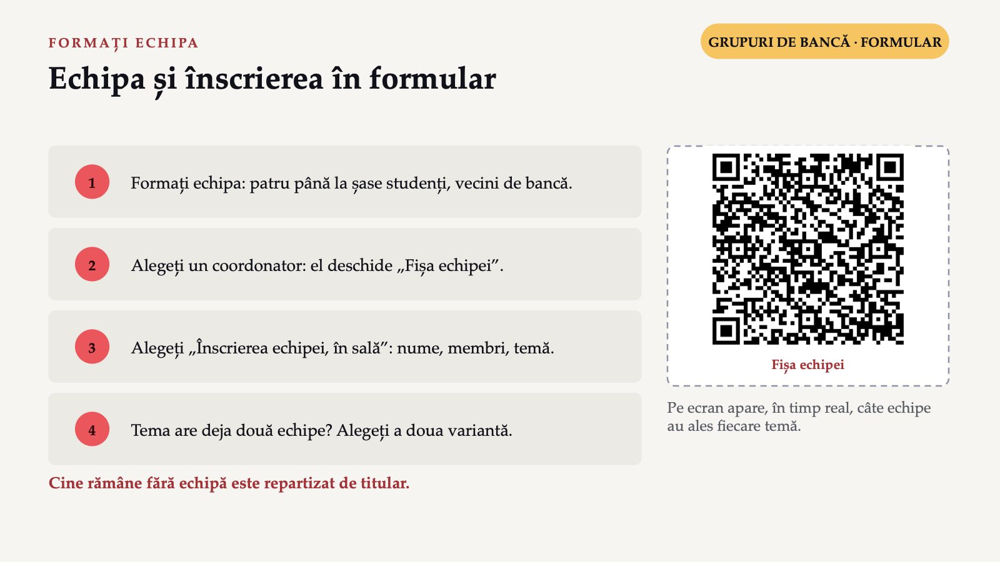
14 / 20Formați o echipă cu vecinii de bancă, o echipă de patru până la șase studenți, inclusiv coordonatorul. Alegeți un coordonator, care deschide pe telefon formularul „Fișa echipei”, prin codul QR de pe ecran, alege varianta „Înscrierea echipei, în sală” și trece numele echipei, numele membrilor și tema. Pe ecran apare, în timp real, câte echipe au ales fiecare temă. Când o temă are deja două echipe, următoarea echipă alege a doua variantă. Colegii rămași fără echipă îi repartizează titularul.
opt
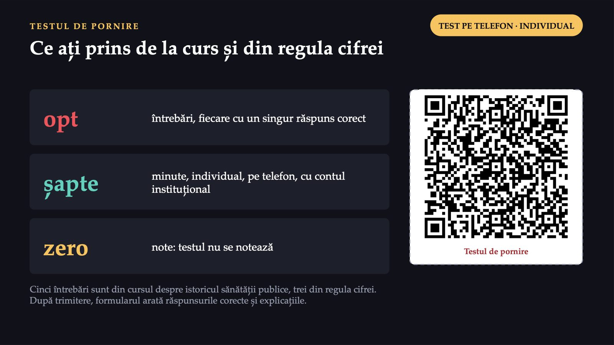
15 / 20Testul de pornire vă arată ce ați prins de la curs, despre istoricul sănătății publice, și din regula cifrei. Se completează individual, pe telefon, cu contul instituțional, în aproximativ șapte minute. Testul nu se notează. După trimitere, formularul vă arată răspunsurile corecte și explicațiile, iar la final discutăm întrebarea la care au greșit cei mai mulți.
Șapte seminarii, un proiect
![GHIDUL PROIECTULUI · O PAGINĂ Șapte seminarii, un proiect Nr. Data Tema Produsul echipei 1 6.10.2026 Lansarea proiectului de echipă fișa echipei și definirea problemei (nu se notează) 2 20.10.2026 Surse de date și indicatori registrul surselor și un tabel sau un grafic 3 3.11.2026 Citirea datelor și elemente epidemiologice descrierea datelor și schema cauzală 4 17.11.2026 Determinanți sociali, comportamente de risc și grupuri vulnerabile harta determinanților 5 1.12.2026 zi liberă · se mută Instituții, legislație și circuitul datelor harta instituțiilor și fișa actelor normative 6 15.12.2026 Intervenții, politici și plan de comunicare propunerile de intervenții și planul de comunicare 7 de confirmat după vacanța de iarnă Susținerea proiectelor prezentarea proiectului Marți, 17–19, sala 1.1 FSI: grupele 101 și 102 împreună, după curs, o dată la două săptămâni. Data de 1.12 se mută.](diapozitive/LP01/016.jpg) 16 / 20
16 / 20Seminariile se țin marți, de la 17 la 19, în sala 1.1 FSI, cu grupele 101 și 102 împreună, imediat după curs, o dată la două săptămâni. Fiecare seminar adaugă o piesă a proiectului. Data de 1 decembrie este zi liberă legală și trebuie mutată; seminarul 7 se confirmă după calendarul Universității. Produsele seminariilor de la al doilea la al șaselea se notează; produsul primului seminar nu se notează. Produsele 2–6 se predau până duminica de după seminar, la ora 22:00, prin formularul echipei.
50%
![EVALUAREA, PE O PAGINĂ Cum se formează nota finală 50% 35% 15% Examenul scris 36 de întrebări-grilă (24 cu un singur răspuns corect, 12 cu mai multe), din suportul de curs și bibliografie. Proiectul de echipă Nota proiectului de echipă: 10–12 minute, 12–15 diapozitive, cel puțin trei vorbitori, în seminarul 7. Produsele seminariilor 2–6 câte 0, 1 sau 2 puncte pentru fiecare produs, predat până duminica de după seminar, ora 22:00. Nota = suma punctelor, cel mult 10. Promovați numai dacă treceți și examenul, și proiectul. Fără punct din oficiu. Nota proiectului este aceeași pentru toți membrii echipei; titularul poate scădea nota unui membru care nu a contribuit.](diapozitive/LP01/017.jpg) 17 / 20
17 / 20Nota finală are trei componente: examenul scris, 50%; proiectul de echipă, 35%; produsele seminariilor de la al doilea la al șaselea, 15%. Proiectul înseamnă o prezentare de 10–12 minute, cu 12–15 diapozitive și cel puțin trei vorbitori, în seminarul 7. Examenul are 36 de întrebări-grilă, 24 cu o singură variantă corectă și 12 cu mai multe. Pentru fiecare dintre cele cinci produse primiți 0, 1 sau 2 puncte, după predarea până duminica de după seminar, la ora 22:00, și corectitudine; nota la produse este suma punctelor, cel mult 10. Nota proiectului este aceeași pentru toți membrii echipei; titularul poate scădea nota unui membru care, după câmpul „Ce a făcut fiecare membru al echipei” și după prezentare, nu a contribuit la proiect. Promovarea cere cel puțin nota 5 atât la examenul scris, cât și la proiect, adică la nota proiectului de echipă, iar nota finală nu include punct din oficiu. Intrarea în prima examinare cere prezența la cel puțin 30% din cursuri și 30% din seminarii, adică la cel puțin 3 din cele 7 seminarii. La restanță, reexaminare sau mărire se reface numai examenul scris; notele de cel puțin 5 de la proiect și de la produsele intermediare se păstrează.
Cum se notează proiectul
![CUM SE NOTEAZĂ PROIECTUL Cum se notează proiectul Structura și claritatea prezentării 20% Corectitudinea și relevanța conținutului 30% Aplicarea conceptelor din curs 25% Propunerile de intervenții și de politici 15% Prezentarea orală 10% Aceeași grilă se folosește pentru evaluarea colegială din ultimul seminar, care este informativă și nu intră în notă. Inteligența artificială Permisă numai pentru redactare (formulare, corectură), cu declarație pe ultimul diapozitiv. Nu pentru găsirea surselor sau a cifrelor: acestea se iau și se verifică la sursa primară. Un instrument de inteligență artificială nu este o sursă. Folosire nedeclarată: 0 puncte, până când echipa reface și declară, în cel mult o săptămână.](diapozitive/LP01/018.jpg) 18 / 20
18 / 20Grila de evaluare a proiectului are cinci criterii: structura și claritatea prezentării, 20%; corectitudinea și relevanța conținutului, 30%; aplicarea conceptelor din curs, 25%; propunerile de intervenții și de politici, 15%; prezentarea orală, 10%. Aceeași grilă se folosește pentru evaluarea colegială din ultimul seminar, care este informativă și nu intră în notă. Instrumentele de inteligență artificială sunt permise numai pentru redactare, adică pentru formularea și corectura textului scris de voi, iar folosirea lor se declară. Nu sunt permise pentru găsirea surselor sau a cifrelor: datele și sursele se iau de la sursa primară și se verifică acolo. Un instrument de inteligență artificială nu este o sursă. Un produs în care folosirea acestor instrumente nu este declarată primește 0 puncte până când echipa îl reface și declară folosirea lor, în termen de o săptămână. La proiectul final, folosirea nedeclarată poate duce la scăderea notei.
Prima pagină a proiectului
![ORA A DOUA · ECHIPA, ACASĂ SAU ÎN SALĂ Prima pagină a proiectului 1 Alegeți problema; scrieți-o în două sau trei propoziții. 2 O primă cifră din TEMPO-Online, Eurostat, GBD Compare sau ECDC, cu cele patru etichete. 3 Patru întrebări: câți afectează, cât de grave sunt urmările, se repetă, se poate preveni. 4 Definirea problemei: cinci până la opt propoziții. 5 Coordonatorul trimite fișa completă, cu ce a făcut fiecare membru. TERMENUL duminică, 11.10.2026, ora 22:00 Formularul „Fișa echipei”, varianta „Fișa completă”. Nu se notează.](diapozitive/LP01/019.jpg) 19 / 20
19 / 20În ora echipei se redactează prima pagină a proiectului: fișa echipei și definirea problemei. Lucrați împreună, în aceeași cameră sau într-o întâlnire pe Teams, și trimiteți un singur formular pe echipă, prin coordonator. Alegeți problema, căutați o primă cifră într-una dintre sursele seminarului și scrieți-o cu cele patru etichete. Răspundeți la patru întrebări despre problema voastră și scrieți definirea ei într-un paragraf. Câmpul „Ce a făcut fiecare membru al echipei” este obligatoriu. Termenul este duminică, 11.10.2026, ora 22:00. Fișa nu se notează, dar pe ea se construiește tot proiectul.
Trei întrebări pentru final
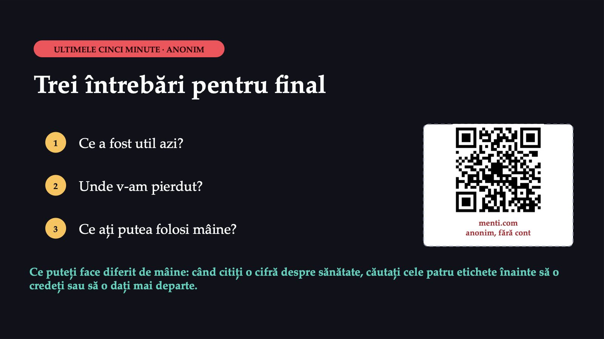
20 / 20Ultimele cinci minute sunt ale voastre: trei întrebări, anonim, pe Mentimeter. Ce a fost util azi? Unde v-am pierdut? Ce ați putea folosi mâine? La începutul seminarului următor veți vedea două lucruri schimbate după răspunsurile voastre, iar schimbările apar și pe pagina disciplinei, lunea viitoare. Ce puteți face diferit de mâine: când citiți o cifră despre sănătate, într-un ziar, pe o rețea socială sau într-un document oficial, căutați cele patru etichete înainte să o credeți sau să o dați mai departe.
Săgeți sau spațiu: navigare · O: vedere de ansamblu · N: notele prezentatorului · F: ecran complet · Esc: închidere